컴퓨터응용가공산업기사 (2002-08-11 기출문제)
1과목: 기계가공법 및 안전관리
1. 회전하는 상자에 공작물과 숫돌입자, 공작액, 콤파운드 등을 함께 넣어 공작물이 입자와 충돌하는 동안에 그 표면의 요철을 제거하며, 매끈한 가공면을 얻는 방법은?
- 버니싱(burnishing)
- 숏 피닝(shot-peening)
- 초음파 가공(ultra-sonic machining)
- 배럴 다듬질(barrel finishing)
(정답률: 60%)

2. 엘렉트로 슬래그(electro slag)용접에서 사용하는 전극와이어의 직경은 보통 몇 ㎜를 사용하는가?
- 1
- 3.2
- 5.5
- 8.3
(정답률: 59%)
3. 방전(放電) 가공에 관한 설명이 아닌 것은?
- 희망하는 모양을 가진 전기공구로, 공작물 표면에 소성변형을 주는 정밀도가 높은 가공법이다.
- 가공방법의 형식으로서는 축전기법, 진동법, 저전압 교류법등이 있다.
- 절삭가공이 어려운 초경합금, 담금질 열처리강, 내열강등도 쉽게 경제적으로 가공할 수 있다.
- 열의 영향이 적으므로 가공변질층이 얇고 내마멸성, 내부식성이 높다.
(정답률: 27%)
4. 다이캐스팅에 일반적으로 많이 사용되는 금속은?
- 아연, 알루미늄의 합금
- 구리, 코발트의 합금
- 아연, 텅스텐의 합금
- 스테인레스, 아연의 합금
(정답률: 49%)
5. KS규격에서 규정된 표면 거칠기 표시법이 아닌 것은?
- 최대 높이 거칠기
- 중심선 평균 거칠기
- 10점 평균 거칠기
- 제곱 평균 거칠기
(정답률: 66%)
6. 보통 주철의 수축여유(shrinkage allowance)는 길이 1m당 얼마인가?
- 8 ㎜/m
- 10 ㎜/m
- 14 ㎜/m
- 20 ㎜/m
(정답률: 60%)
7. 일반재료에서 드릴의 표준 날끝각은 몇 도 인가?
- 118°
- 230°
- 80°
- 150°
(정답률: 81%)
8. 인발 작업에서 역장력을 작용시켰을 때, 나타나는 현상으로 틀린 것은?
- 다이 구멍의 확대변형이 적다.
- 다이 수명이 길어진다.
- 인발력이 감소한다.
- 제품 정도가 좋아진다.
(정답률: 71%)
9. 어미자의 최소눈금이 0.5mm이고, 아들자의 눈금기입 방법이 24.5mm를 25등분한 버니어 캘리퍼스의 최소 측정값은?
- 1/10 [mm]
- 1/20 [mm]
- 1/50 [mm]
- 1/100 [mm]
(정답률: 58%)
10. 길이 측정기 중 레버(lever)를 이용하는 것은?
- 마이크로미터(micrometer)
- 다이얼 게이지(dial gauge)
- 미니미터(minimeter)
- 옵티컬 플랫(optical flat)
(정답률: 44%)
11. 평면도 측정과 가장 관계가 적은 측정기는?
- 옵티컬 플랫(optical flat)
- 오토-콜리메이터(auto-collimator)
- 베벨프로트랙터(bevel protractor)
- 수준기(level)
(정답률: 40%)
12. 빌트 업 에지(built-up edge)란?
- 절삭공구의 절삭 압력을 말한다.
- 조합 구성된 날끝을 나타낸다.
- 공구날의 마멸 현상을 말한다.
- 칩의 일부가 공구 끝에 붙는 것이다.
(정답률: 66%)
13. 절삭공구의 수명을 판정하는 방법으로 흔히 사용되는 대표적인 것을 나열하였다. 잘못된 것은 어느 것인가?
- 완성가공면의 표면에 광택이 있는 색조(色調)또는 반점(斑點)이 생길때
- 공구인선(工具刃先)의 마모가 없을 때
- 완성가공된 치수의 변화가 일정량에 달하였을 때
- 절삭저항의 주분력에는 변화가 나타나지 않더라도 배분력 또는 이송분력이 급격히 증가하였을 때
(정답률: 61%)
14. 특수아크 용접에 해당되지 않는 것은?
- TIG용접
- 잠호(潛弧)용접
- MIG용접
- 심(seam)용접
(정답률: 35%)
15. 단조 가공할 때, 행정이 고정되어 있으므로 제품치수에 제한을 받는 단조기계는?
- 드롭해머
- 스프링해머
- 토글프레스
- 유압프레스
(정답률: 48%)
16. 치약(齒藥)튜브(tube)를 제조하려고 한다. 다음 중 어느 방법이 가장 일반적 제조법이 되겠는가?
- 인발
- 전조
- 충격압출
- 직접압연
(정답률: 50%)
17. 단조온도에 관한 설명으로 옳지 않은 것은?
- 너무 급하게 고온도로 가열하지 않는다.
- 단조재료를 가열할 때는 버닝 온도 또는 용융 시작 온도를 100℃이내에 접근시키지 않는 것이 좋다.
- 필요이상의 고온으로 너무 오래 가열하지 말고 균일하게 가열한다.
- 가공완료온도는 재결정 온도보다 낮아야 한다.
(정답률: 56%)
18. 다음 중 테일러의 공구 수명(T)을 바르게 표시한 식은? (단,계수 n≒1/5‾/10, V는 절삭속도, C는 공구재질, 절삭깊이,이송 및 절삭 유제 등에 따른 정수이다.)
- VTn = C
- VnT = C
- VT1/n = C
- V1/nTn = C
(정답률: 54%)
19. 숫돌의 입자가 무디거나 눈메움(loading)이 나타나 깎임새가 저하할 때, 어떻게 하는 것이 가장 좋은가?
- 공구로 그라인딩 작업을 한다.
- 숫돌의 드레싱 작업을 한다.
- 공작액을 교환한다.
- 숫돌을 글레이징한다.
(정답률: 72%)
20. 다음 중 풀림의 목적이 될 수 없는 것은?
- 점성 제거
- 내부응력 제거
- 경화된 재료의 연화(軟化)
- 결정입자의 조질(調質)
(정답률: 50%)
2과목: 기계설계 및 기계재료
21. 알루미늄합금인 Al-Mg-Si의 강도를 증가시키기 위한 가장 좋은 방법은?
- 시효경화(Age-Hardening)
- 담금질(Quenching)
- 냉간가공(Cold work)
- 용체화처리(Solution treatment)
(정답률: 38%)
22. 탄소량이 0.77％이하의 강은?
- 아공석강
- 공석강
- 과공석강
- 주철
(정답률: 43%)
23. 다음 그림과 같은 리벳이음에서 리벳의 허용 전단응력 및 지름을 각각 같게 하면, 강판에 허용할 수 있는 인장하중 P2는 P1의 몇 배인가? (단, 강판의 두께는 모두 동일하고, 리벳의 전단(剪斷)파괴에 대해서만 고려한다.)
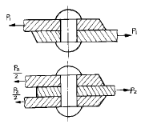
- 1배
- 2배
- 3배
- 4배
(정답률: 50%)
24. 다음 배빗메탈(babbit metal)의 주성분은?
- Sn-Sb-Zn-Cu
- Sn-Sb-Ni-Al
- Sn-Pb-Cu-Fe
- Sn-Pb-Mo-Zn
(정답률: 30%)
25. 침탄과 동시에 질화도 되므로 침탄질화법 또는 청화법이라고 하는 열처리법은?
- 고체 침탄법
- 액체 침탄법
- 가스 침탄법
- 전해 경화법
(정답률: 31%)
26. 고속도강(high speed steel)의 기본성분에 속하지 않는 원소는?
- Ni
- Cr
- W
- V
(정답률: 54%)
27. 다음 자동하중 브레이크에 속하지 않는 브레이크는?
- 워엄 브레이크
- 나사 브레이크
- 캠 브레이크
- 원추 브레이크
(정답률: 27%)
28. 원자반경의 크기가 유사한 원자끼리 적절한 배열을 형성하면서 새로운 상을 형성하는 것은?
- 기계적 혼합물
- 침입형 고용체
- 치환형 고용체
- 금속간 화합물
(정답률: 33%)
29. 평행한 두 축사이에 회전을 전달하는 기어는 다음 중 어느 것인가?
- 헬리컬 기어
- 베벨 기어
- 웜 기어
- 하이포이드 기어
(정답률: 56%)
30. 다음 중 주철의 장점이 될 수 없는 것은?
- 용융점이 낮고 유동성이 우수하다
- 연신율이 높은편이다
- 압축강도가 크다
- 마찰저항이 우수하다
(정답률: 28%)
31. 코일 스프링에 있어서 스프링 지수를 C라 하고,와알의 수정계수를 K라 할때 C와 K의 관계로서 옳은 것은?
- 정비례 한다.
- C는 K의 자승근에 정비례한다.
- C는 K의 3승근에 정비례한다.
- 반비례 한다.
(정답률: 34%)
32. 성크키의 하중(P) = 18000㎏f, 길이(L) 24㎝, 폭(b) = 1.5h라 할때 키이의 높이(h)는 약 몇 ㎜인가? (단, 키의허용전단응력τa = 2㎏f/mm2이다.)
- 15
- 25
- 35
- 45
(정답률: 34%)
33. V-벨트의 각도는 보통 몇 도인가?
- 90°
- 60°
- 40°
- 30°
(정답률: 61%)
34. 롤링 베어링이 슬라이딩 베어링에 비해 장점이 아닌 것은?
- 마찰계수가 1/10 이하로 작아 동력 손실이 적다.
- 베어링 폭이 작다.
- 저어널의 길이가 짧다.
- 충격하중에 강하다.
(정답률: 29%)
35. 주철(cast iron)에 시멘타이트(cementite)가 정출되어 백선화 경향이 심한 경우는 다음 중 어느 것인가?
- 탄소와 규소가 적고 제품이 얇을 때
- 탄소와 규소가 많고 제품이 얇을 때
- 탄소와 규소가 적고 제품이 두꺼울 때
- 탄소와 규소가 많고 제품이 두꺼울 때
(정답률: 30%)
36. 정지 상태에서 압입자를 눌러서 경도를 측정하는 경도계가 아닌 것은?
- 브리넬 경도계
- 쇼어 경도계
- 로크웰 경도계
- 비커스 경도계
(정답률: 33%)
37. 게이트 밸브라고도 부르며, 밸브판이 유체의 흐름에 직각으로 작용하고 있는 밸브는?
- 체크밸브
- 감압밸브
- 슬루스밸브
- 스톱밸브
(정답률: 32%)
38. 다음의 스퍼기어에 대한 관계식이다. 맞는 것은? (단, m : 모듈, d : 피치원 지름, Z : 잇수, P : 원주피치이다.)
- m = Z/d = π /P
- m = d/Z = π /P
- m = Z/d = Z/π
- m = d/Z = P/π
(정답률: 33%)
39. 상온 가공한 강의 탄성 한계를 향상시키기 위하여 200-360℃로 가열하는 작업은?
- 서브제로 처리(Subzero treatment)
- 오스포밍(Ausforming)
- 불루잉(Bluing)
- 어닐링(Annealing)
(정답률: 19%)
40. 양 방향의 추력(thrust)을 받아서 정확한 운동을 전달 시키려고 할때 어느 나사가 가장 적합한가?
- 사다리꼴나사
- 톱니나사
- 유니파이보통나사
- 둥근나사
(정답률: 33%)
3과목: 컴퓨터응용가공
41. 그래픽 기본요소 중 하나의 선을 정의하는 방법으로 적당하지 않은 것은?
- 2개의 점으로 표시
- 한점과 수평선과의 각도를 지정하여 표시
- 한점에서 다른 점에 대한 평행선으로 표시
- 원주상의 3점을 지정하여 표시
(정답률: 59%)
42. 주어진 평면도와 우측면도를 보고 정면도로 올바른 도면은?
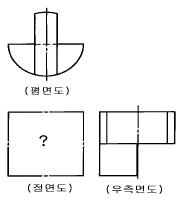
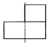
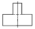
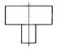
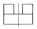
(정답률: 43%)
43. 보조기억 장치 중 순차접근만 가능한 것은?
- 자기 디스크
- 플로피 디스크
- 자기 테이프
- 하드 디스크
(정답률: 28%)
44. CAD작업에서 도형을 인식(identify, select)하는 목적과 직접적인 관련이 없는 사항은?
- 선이나 원 등 도형 요소를 삭제하고자 할 때
- 스크린상에 그리드를 작성하고자 할 때
- 하나의 오브젝트를 변환시키고자 할 때
- 하나의 오브젝트에 치수 기입을 하고자 할 때
(정답률: 31%)
45. 나사의 도시법에 대한 설명 중 틀린 것은?
- 수나사의 바깥지름과 암나사의 안지름은 굵은실선으로 그린다.
- 불완전 나사부와 완전 나사부의 경계선은 굵은실선으로 표시한다.
- 수나사의 골지름과 암나사의 바깥지름은 굵은실선으로 그린다.
- 암나사 탭 구멍의 드릴 자리는 120° 의 굵은실선으로 그린다.
(정답률: 32%)
46. 다음 끼워맞춤의 표시방법을 설명한 것 중 틀린 것은?
- ø20H7:직경이 20인 구멍으로 7등급의 IT공차를 가짐
- ø20h6:직경이 20인 축으로 6등급의 IT공차를 가짐
- ø20H7/g6 : 직경이 20인 구멍으로 H7구멍과 g6급축이 헐겁게 결합되어 있음을 나타냄.
- ø20H7/f6 : 직경이 20인 구멍으로 H7구멍과 f6급축이 억지로 결합되어 있음을 나타냄.
(정답률: 56%)
47. 컬러 프린터를 이용하여 출력하고자 한다. 여기에서 사용되는 기본 색이 아닌 것은?
- BLACK
- CYAN
- MAGENTA
- BLUE
(정답률: 23%)
48. 투상도의 선택방법 중 틀린 것은?
- 주투상도에는 대상물의 모양, 기능을 가장 명확하게 표현하는 면을 그린다.
- 주투상도를 보충하는 다른 투상도는 되도록 적게하고주 투상도만으로 표시할 수 있는 것에 대하여는 다른 투상도는 그리지 않는다.
- 주투상도는 어떻게 놓더라도 괜찮다.
- 서로 관련되는 그림의 배치는 되도록 숨은선을 쓰지 않도록 한다.
(정답률: 57%)
49. 원추형 단면(Conic Section)에 의해 얻어질 수 없는 도형은 어느 것인가?
- 타원(Ellipse)
- 쌍곡선(Hyperbola)
- 원호(Arc)
- 포물선(Parabola)
(정답률: 28%)
50. 단면의 해칭하는 방법과 가장 관계없는 사항은?
- 동일한 부품의 단면은 떨어져 있어도 해칭의 각도와 간격은 일정하게 그린다.
- 두께가 얇은 부분의 단면도는 실제치수와 관계없이 한개의 굵은 실선으로 도시할 수 있다.
- 필요에 따라 해칭하지 않고 스머징할 수 있다.
- 해칭한 곳에는 해칭선을 중단하고 글자, 기호등을 기입할 수 없다.
(정답률: 34%)
51. 다음은 CAD 소프트웨어에서 갖고 있는 명령어이다. 이중에서 데이터 변환(transformation)기능을 나타내는 것은?
- LINE
- ZOOM
- TRANSLATION
- SYMBOL
(정답률: 62%)
52. 축방향에서 본 기어의 도시에서 원칙적으로 이뿌리원을 생략하여 그리는 기어는?
- 스퍼기어
- 헬리컬기어
- 베벨기어
- 나사기어
(정답률: 28%)
53. 다음 기하공차의 부가기호 중 돌출 공차역을 나타내는 것은?
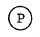
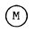
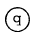
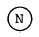
(정답률: 48%)
54. 다음 요소 중 길이방향으로 단면하여 도시할 수 있는 것은?
- 풀리
- 작은 나사
- 볼트
- 리벳
(정답률: 38%)
55. 그림과 같이 평면상의 두 벡터
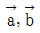
로 이루어진 평행사변형의 넓이를 구한 식으로 맞는 것은?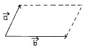
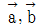
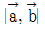
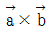
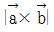
(정답률: 41%)
56. 다음 변환 행렬에서 전단변환(shearing transformation)과 관련되는 요소로 올바르게 짝지어진 것은?
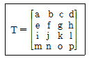
- a, f, k, p
- m, n, o, p
- m, n, o, d, h, ℓ
- b, c, e, g, i, j
(정답률: 23%)
57. 기계제도에서 가공 전이나 후의 형상을 표시할 경우 사용되는 선의 종류는?
- 굵은 실선
- 가는 실선
- 가는 1점쇄선
- 가는 2점쇄선
(정답률: 38%)
58. 도면에 치수 기입시 유의사항을 설명한 것중 틀린 것은?
- 서로 관련이 되는 치수는 알아보기 쉽게 분산하여 기입한다.
- 참고 치수에 대하여는 괄호를 붙인다.
- 각 투상도간 비교, 대조가 용이하게 기입한다.
- 치수는 되도록 주투상도에 기입한다.
(정답률: 46%)
59. CAD로 작성된 도면에서 선의 종류는 가공자에게는 중요한 의미가 된다. 다음 선의 종류를 선택하는 방법 중 잘못된 방법은?
- 보이지 않는 부분의 모양은 숨은선으로 한다.
- 치수선은 가는 실선으로 한다.
- 절단면을 나타내는 절단선은 연속선으로 한다.
- 치수 보조선은 가는 실선으로 한다.
(정답률: 60%)
60. 그림과 같은 삼각형 OAB 를 원점을 중심으로 반시계방향으로 60° 회전시킬 때 점 B(1, 2)의 회전한 점의 좌표는?
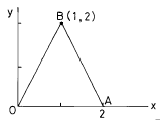
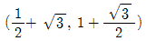
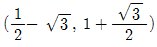
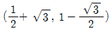
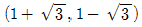
(정답률: 47%)
4과목: 기계제도 및 CNC공작법
61. 미리 정해진 연속된 단면을 덮는 표면 곡면을 생성시켜 닫혀진 부피영역 혹은 솔리드 모델을 만드는 모델링 방법은?
- 트위킹(tweaking)
- 리프팅(lifting)
- 스위핑(sweeping)
- 스키닝(skinning)
(정답률: 37%)
62. 서피스(Suface) 모델링의 특징이 아닌 것은?
- 두 개 면의 교선을 구할 수 있다.
- 복잡한 형상 표현이 가능하다.
- NC 가공 정보를 얻을 수 있다.
- 유한 요소법(FEM)의 적용을 위한 요소 분할이 쉽다.
(정답률: 57%)
63. 어떤 위치에서 정방향으로서의 위치결정과 부방향으로서의 위치결정에 의한 정.부 방향의 정지위치 차이를 무엇이라 하는가?
- Position motion
- Feed motion
- Lost motion
- Cycle motion
(정답률: 11%)
64. 와이어프레임 모델링 시스템에 관한 설명 중 틀린 것은?
- 모델의 은선처리가 어렵다.
- 삼차원 물체의 형상을 표현한다.
- 물체상의 점, 선, 면 정보로 구성된다.
- 유한요소를 생성할 수 없다.
(정답률: 36%)
65. NC 데이터를 기계로 전송하기 위하여 사용되는 인터페이스(interface)중 RS-232C의 특징으로 부적절한 것은?
- 데이터의 흐름은 직렬 전송 방식의 일종이다.
- 접속이 용이하나, 신호 잡음 성능이 떨어진다.
- 컴퓨터와 기계를 제한없이 인터페이스가 가능하다.
- 전송 거리는 15m 이내에서 안정적이다.
(정답률: 24%)
66. 자동프로그램의 생성 과정이 바르게 나열된 것은?
- 도형정보 화일(GIF)→ 공구위치 파일(CLF)→ 포스트 프로세서→ NC 프로그램
- 도형정보 화일(GIF)→ 포스트 프로세서→ 공구위치 파일(CLF)→ NC 프로그램
- 공구위치 파일(CLF)→ 도형정보 화일(GIF)→ 포스트 프로세서→ NC 프로그램
- 공구위치 파일(CLF)→ 포스트 프로세서→ NC 프로그램→ 도형정보화일(GIF)
(정답률: 43%)
67. 다음과 같은 지령에서 맨끝 G code만 유효한 프로그램은?
- G17 G00 G40 G49 ;
- G91 G01 G02 G03 ;
- G00 G01 G02 G03 ;
- G90 G02 G01 G03 ;
(정답률: 31%)
68. 주어진 점들이 곡면상에 놓이도록 점 데이터로 곡면을 형성하는 것은?
- 보간(interpolation)
- 근사(approximation)
- 스무딩(smoothing)
- 리메싱(remeshing)
(정답률: 47%)
69. 다음 중 곡선에 관한 설명으로 잘못된 것은?
- Bezier 곡선은 반드시 곡선의 시작과 끝 양단의 정점을 통과한다.
- B-spline은 곡선 전체의 연속성이 기초 스플라인(spline)을 이용한다.
- Bezier 곡선은 정점으로 구성되는 볼록 다각형의 내측에 존재한다.
- B-spline은 1개의 정점 변화에 의해 곡선 전체에 영향을 미친다.
(정답률: 42%)
70. 솔리드 모델링에 있어서 사각블럭, 정육면체, 구, 원통, 피라밋 등과 같은 기본 입체를 사용하여 리언 오퍼레이션으로 데이터를 저장하는 방식을 무엇이라고 하는가?
- CSG 방식
- B-rep 방식
- NURBS 방식
- Assembly 방식
(정답률: 40%)
71. CNC선반에서 절삭동력이 3.2㎾이고 주축의 회전수가 1300rpm일 때 60㎜의 환봉을 절삭하는 주분력은?
- 577 N
- 784 N
- 5770 N
- 7840 N
(정답률: 32%)
72. CNC공작기계 운전 중 작업자가 주의할 사항 중 옳지 못한 것은?
- 작동중에는 모든 문이나 커버가 닫혀 있어야 한다.
- 비상정지 버튼의 위치를 기억하여 순간적으로 누를수 있도록 한다.
- 공구나 테이블 등에 감기거나 놓인 칩은 손으로 당기지 않는다.
- 절삭유 노즐의 조정시에는 기계를 작동시킨 상태에서 위치를 조정한다.
(정답률: 72%)
73. 주축 회전수 N=1500rpm, 가공물의 직경 ø 20㎜인 연강을 CNC 선반에서 절삭할 때 절삭속도는 몇 m/min 인가?
- 157
- 94.2
- 15.7
- 942
(정답률: 61%)
74. 절삭가공에서 절삭유의 역할을 설명한 내용중 제일 관계가 없는 것은?
- 공구 수명 연장
- 공작물 변형 억제
- 동력 소모 줄임
- 공구 떨림 방지
(정답률: 44%)
75. 다음 중 원호보간(G02,G03)에서 원호를 지령하는 어드레스가 아닌 것은?
- D
- I
- J
- R
(정답률: 66%)
76. 다음의 가공 프로그램으로 도면과 같이 ø45 부분의 홈을 가공하고 있다. 현재의 회전수는?
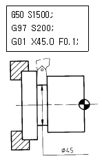
- 150rpm
- 200rpm
- 1415rpm
- 1500rpm
(정답률: 33%)
77. 다음 중 G-코드의 설명으로 잘못된 것은?
- 사용할 수 없는 G-코드를 지령하면 알람이 발생한다.
- 그룹이 서로 다르면 몇 개라도 동일블록에 지령할 수 있다.
- 동일그룹의 G-코드를 같은 블록에 두개이상 지령하면 알람이 발생한다.
- 모달 G-코드는 동일그룹의 다른 G-코드가 나올때까지 유효하다.
(정답률: 48%)
78. 다음 중 공구의 인선 R보정에 관한 준비기능은?
- G00
- G32
- G41
- G90
(정답률: 61%)
79. 조정점(control point)의 갯수에 따라 곡선의 차수(order)가 고정되지 않으므로 차수의 변화로 다양한 형상의 곡선을 얻을 수 있는 곡선 표현방식은?
- 3차 spline 곡선
- 베지에르 곡선
- B-spline 곡선
- Lagrange 곡선
(정답률: 45%)
80. CNC 공작기계의 이송나사로 사용되는 것은?
- 볼나사
- 사각나사
- 사다리꼴나사
- 유니파이나사
(정답률: 54%)